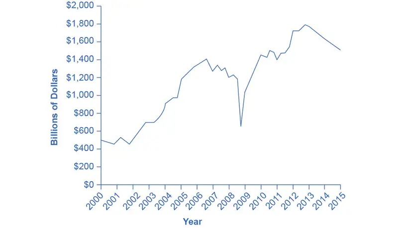
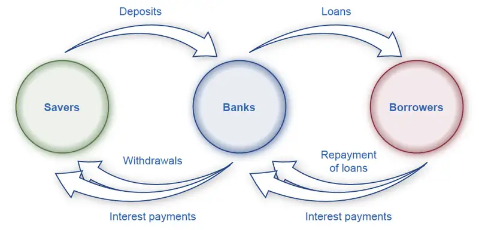

Chapter 17: Financial Markets¶
Introduction¶
Bring It Home: The Housing Bubble and the 2007 Financial Crisis
In 2006, housing equity in the United States peaked at $13 trillion. That means that the market prices of homes, less what was still owed on the loans they used to buy these houses, equaled $13 trillion. This was a very good number, since the equity represented the value of the financial asset most U.S. citizens owned.
However, by 2008 this number declined to $8.8 trillion, and it plummeted further still in 2009. Combined with the decline in value of other financial assets held by U.S. citizens, by 2010, U.S. homeowners’ wealth had shrunk $14 trillion! This is a staggering result, and it affected millions of lives: people had to alter their retirement, housing, and other important consumption decisions. Just about every other large economy in the world suffered a decline in the market value of financial assets, as a result of the 2008-2009 global financial crisis.
This chapter will explain why people purchase houses (other than as a place to live), why they buy other types of financial assets, and why businesses sell those financial assets in the first place. The chapter will also give us insight into why financial markets and assets go through boom and bust cycles like the one we described here.
Chapter Outline: Introduction to Financial Markets
In this chapter, you will learn about:
- How Businesses Raise Financial Capital
- How Households Supply Financial Capital
- How to Accumulate Personal Wealth
When a firm needs to buy new equipment or build a new facility, it often must go to the financial market to raise funds. Usually firms will add capacity during an economic expansion when profits are on the rise and consumer demand is high. Business investment is one of the critical ingredients needed to sustain economic growth. Even in the sluggish 2009 economy, U.S. firms invested $1.4 trillion in new equipment and structures, in the hope that these investments would generate profits in the years ahead.
Between the end of the recession in 2009 through the second quarter 2013, profits for the S&P 500 companies grew by 9.7% despite the weak economy, with cost cutting and reductions in input costs driving much of that amount, according to the Wall Street Journal. Figure 17.2 shows corporate profits after taxes (adjusted for inventory and capital consumption). Despite the steep decline in quarterly net profit in 2008, profits have recovered and surpassed pre-recession levels.

Many firms, from huge companies like General Motors to startup firms writing computer software, do not have the financial resources within the firm to make all the desired investments. These firms need financial capital from outside investors, and they are willing to pay interest for the opportunity to obtain a rate of return on the investment of that financial capital.
On the other side of the financial capital market, financial capital suppliers, like households, wish to use their savings in a way that will provide a return. Individuals cannot, however, take the few thousand dollars that they save in any given year, write a letter to General Motors or some other firm, and negotiate to invest their money with that firm. Financial capital markets bridge this gap: that is, they find ways to take the inflow of funds from many separate financial capital suppliers and transform it into the funds of financial capital demanders desire. Such financial markets include stocks, bonds, bank loans, and other financial investments.
Corporate Profits After Tax (Adjusted for Inventory and Capital Consumption)
Link It Up
Visit this website to read more about financial markets.
Our perspective then shifts to consider how these financial investments appear to capital suppliers such as the households that are saving funds. Households have a range of investment options: bank accounts, certificates of deposit, money market mutual funds, bonds, stocks, stock and bond mutual funds, housing, and even tangible assets like gold. Finally, the chapter investigates two methods for becoming rich: a quick and easy method that does not work very well at all, and a slow, reliable method that can work very well over a lifetime.
17.1 How Businesses Raise Financial Capital¶
Learning Objectives
By the end of this section, you will be able to:
- Describe financial capital and how it relates to profits
- Discuss the purpose and process of borrowing, bonds, and corporate stock
- Explain how firms choose between sources of financial capital
Firms often make decisions that involve spending money in the present and expecting to earn profits in the future. Examples include when a firm buys a machine that will last 10 years, or builds a new plant that will last for 30 years, or starts a research and development project. Firms can raise the financial capital they need to pay for such projects in four main ways: (1) from early-stage investors; (2) by reinvesting profits; (3) by borrowing through banks or bonds; and (4) by selling stock. When business owners choose financial capital sources, they also choose how to pay for them.
Early-Stage Financial Capital¶
Firms that are just beginning often have an idea or a prototype for a product or service to sell, but few customers, or even no customers at all, and thus are not earning profits. Such firms face a difficult problem when it comes to raising financial capital: How can a firm that has not yet demonstrated any ability to earn profits pay a rate of return to financial investors?
For many small businesses, the original source of money is the business owner. Someone who decides to start a restaurant or a gas station, for instance, might cover the startup costs by dipping into their own bank account, or by borrowing money (perhaps using a home as collateral). Alternatively, many cities have a network of well-to-do individuals, known as “angel investors,” who will put their own money into small new companies at an early development stage, in exchange for owning some portion of the firm.
Venture capital firms make financial investments in new companies that are still relatively small in size, but that have potential to grow substantially. These firms gather money from a variety of individual or institutional investors, including banks, institutions like college endowments, insurance companies that hold financial reserves, and corporate pension funds. Venture capital firms do more than just supply money to small startups. They also provide advice on potential products, customers, and key employees. Typically, a venture capital fund invests in a number of firms, and then investors in that fund receive returns according to how the fund as a whole performs.
The amount of money invested in venture capital fluctuates substantially from year to year: as one example, venture capital firms invested more than $48.3 billion in 2014, according to the National Venture Capital Association. All early-stage investors realize that the majority of small startup businesses will never hit it big; many of them will go out of business within a few months or years. They also know that getting in on the ground floor of a few huge successes like a Netflix or an Amazon.com can make up for multiple failures. Therefore, early-stage investors are willing to take large risks in order to position themselves to gain substantial returns on their investment.
Profits as a Source of Financial Capital¶
If firms are earning profits (their revenues are greater than costs), they can choose to reinvest some of these profits in equipment, structures, and research and development. For many established companies, reinvesting their own profits is one primary source of financial capital. Companies and firms just getting started may have numerous attractive investment opportunities, but few current profits to invest. Even large firms can experience a year or two of earning low profits or even suffering losses, but unless the firm can find a steady and reliable financial capital source so that it can continue making real investments in tough times, the firm may not survive until better times arrive. Firms often need to find financial capital sources other than profits.
Borrowing: Banks and Bonds¶
When a firm has a record of at least earning significant revenues, and better still of earning profits, the firm can make a credible promise to pay interest, and so it becomes possible for the firm to borrow money. Firms have two main borrowing methods: banks and bonds.
A bank loan for a firm works in much the same way as a loan for an individual who is buying a car or a house. The firm borrows an amount of money and then promises to repay it, including some rate of interest, over a predetermined period of time. If the firm fails to make its loan payments, the bank (or banks) can often take the firm to court and require it to sell its buildings or equipment to make the loan payments.
Another source of financial capital is a bond. A bond is a financial contract: a borrower agrees to repay the amount that it borrowed and also an interest rate over a period of time in the future. A corporate bond is issued by firms, but bonds are also issued by various levels of government. For example, a municipal bond is issued by cities, a state bond by U.S. states, and a Treasury bond by the federal government through the U.S. Department of the Treasury. A bond specifies an amount that one will borrow, the interest rate that one will pay, and the time until repayment.
A large company, for example, might issue bonds for $10 million. The firm promises to make interest payments at an annual rate of 8%, or $800,000 per year and then, after 10 years, will repay the $10 million it originally borrowed. When a firm issues bonds, it may choose to issue many bonds in smaller amounts that together reach the total amount it wishes to raise. A firm that seeks to borrow $50 million by issuing bonds, might actually issue 10,000 bonds of $5,000 each. In this way, an individual investor could, in effect, loan the firm $5,000, or any multiple of that amount. Anyone who owns a bond and receives the interest payments is called a bondholder. If a firm issues bonds and fails to make the promised interest payments, the bondholders can take the firm to court and require it to pay, even if the firm needs to raise the money by selling buildings or equipment. However, there is no guarantee the firm will have sufficient assets to pay off the bonds. The bondholders may recoup only a portion of what they loaned the firm.
Bank borrowing is more customized than issuing bonds, so it often works better for relatively small firms. The bank can get to know the firm extremely well—often because the bank can monitor sales and expenses quite accurately by looking at deposits and withdrawals. Relatively large and well-known firms often issue bonds instead. They use bonds to raise new financial capital that pays for investments, or to raise capital to pay off old bonds, or to buy other firms. However, the idea that firms or individuals use banks for relatively smaller loans and bonds for larger loans is not an ironclad rule: sometimes groups of banks make large loans and sometimes relatively small and lesser-known firms issue bonds.
Corporate Stock and Public Firms¶
A corporation is a business that “incorporates”—that is owned by shareholders that have limited liability for the company's debt but share in its profits (and losses). Corporations may be private or public, and may or may not have publicly traded stock. They may raise funds to finance their operations or new investments by raising capital through selling stock or issuing bonds.
Those who buy the stock become the firm's owners, or shareholders. Stock represents firm ownership; that is, a person who owns 100% of a company’s stock, by definition, owns the entire company. The company's stock is divided into shares. Corporate giants like IBM, AT&T, Ford, General Electric, Microsoft, Merck, and Exxon all have millions of stock shares. In most large and well-known firms, no individual owns a majority of the stock shares. Instead, large numbers of shareholders—even those who hold thousands of shares—each have only a small slice of the firm's overall ownership.
When a large number of shareholders own a company, there are three questions to ask:
- How and when does the company obtain money from its sale of stock?
- What rate of return does the company promise to pay when it sells stock?
- Who makes decisions in a company owned by a large number of shareholders?
First, a firm receives money from the stock sale only when the company sells its own stock to the public (the public includes individuals, mutual funds, insurance companies, and pension funds). We call a firm’s first stock sale to the public an initial public offering (IPO). The IPO is important for two reasons. For one, the IPO, and any stock issued thereafter, such as stock held as treasury stock (shares that a company keeps in their own treasury) or new stock issued later as a secondary offering, provides the funds to repay the early-stage investors, like the angel investors and the venture capital firms. A venture capital firm may have a 40% ownership in the firm. When the firm sells stock, the venture capital firm sells its part ownership of the firm to the public. A second reason for the importance of the IPO is that it provides the established company with financial capital for substantially expanding its operations.
However, most of the time when one buys and sells corporate stock the firm receives no financial return at all. If you buy General Motors stock, you almost certainly buy it from the current share owner, and General Motors does not receive any of your money. This pattern should not seem particularly odd. After all, if you buy a house, the current owner receives your money, not the original house builder. Similarly, when you buy stock shares, you are buying a small slice of the firm's ownership from the existing owner—and the firm that originally issued the stock is not a part of this transaction.
Second, when a firm decides to issue stock, it must recognize that investors will expect to receive a rate of return. That rate of return can come in two forms. A firm can make a direct payment to its shareholders, called a dividend. Alternatively, a financial investor might buy a share of stock in Wal-Mart for $45 and then later sell it to someone else for $60, for $15 gain. We call the increase in the stock value (or of any asset) between when one buys and sells it a capital gain.
Third: Who makes the decisions about when a firm will issue stock, or pay dividends, or re-invest profits? To understand the answers to these questions, it is useful to separate firms into two groups: private and public.
A private company is frequently owned by the people who generally run it on a day-to-day basis. Individuals can run a private company. We call this a sole proprietorship. If a group runs it, we call it a partnership. A private company can also be a corporation, but with no publicly issued stock. A small law firm run by one person, even if it employs some other lawyers, would be a sole proprietorship. Partners may jointly own a larger law firm. Most private companies are relatively small, but there are some large private corporations, with tens of billions of dollars in annual sales, that do not have publicly issued stock, such as farm products dealer Cargill, the Mars candy company, and the Bechtel engineering and construction firm.
When a firm decides to sell stock, which financial investors can buy and sell, we call it a public company. Shareholders own a public company. Since the shareholders are a very broad group, often consisting of thousands or even millions of investors, the shareholders vote for a board of directors, who in turn hire top executives to run the firm on a day-to-day basis. The more stock a shareholder owns, the more votes that shareholder is entitled to cast for the company’s board of directors.
In theory, the board of directors helps to ensure that the firm runs in the interests of the true owners—the shareholders. However, the top executives who run the firm have a strong voice in choosing the candidates who will serve on their board of directors. After all, few shareholders are knowledgeable enough or have enough personal incentive to spend energy and money nominating alternative board members.
How Firms Choose between Financial Capital Sources¶
There are clear patterns in how businesses raise financial capital. We can explain these patterns in terms of imperfect information, which as we discussed in Information, Risk, and Insurance, is a situation where buyers and sellers in a market do not both have full and equal information. Those who are actually running a firm will almost always have more information about whether the firm is likely to earn profits in the future than outside investors who provide financial capital.
Any young startup firm is a risk. Some startup firms are only a little more than an idea on paper. The firm’s founders inevitably have better information than anyone else about how hard they are willing to work, and whether the firm is likely to succeed. When the founders invested their own money into the firm, they demonstrate a belief in its prospects. At this early stage, angel investors and venture capitalists try to overcome the imperfect information, at least in part, by knowing the managers and their business plan personally and by giving them advice.
Accurate information is sometimes not available because corporate governance, the name economists give to the institutions that are supposed to watch over top executives, fails, as the following Clear It Up feature on Lehman Brothers shows.
Clear It Up: How did lack of corporate governance lead to the Lehman Brothers failure?
In 2008, Lehman Brothers was the fourth largest U.S. investment bank, with 25,000 employees. The firm had been in business for 164 years. On September 15, 2008, Lehman Brothers filed for Chapter 11 bankruptcy protection. There are many causes of the Lehman Brothers failure. One area of apparent failure was the lack of oversight by the Board of Directors to keep managers from undertaking excessive risk. We can attribute part of the oversight failure, according to Tim Geithner’s April 10, 2010, testimony to Congress, to the Executive Compensation Committee’s emphasis on short-term gains without enough consideration of the risks. In addition, according to the court examiner’s report, the Lehman Brother’s Board of Directors paid too little attention to the details of the operations of Lehman Brothers and also had limited financial service experience.
The board of directors, elected by the shareholders, is supposed to be the first line of corporate governance and oversight for top executives. A second institution of corporate governance is the auditing firm the company hires to review the company's financial records and certify that everything looks reasonable. A third institution of corporate governance is outside investors, especially large shareholders like those who invest large mutual funds or pension funds. In the case of Lehman Brothers, corporate governance failed to provide investors with accurate financial information about the firm’s operations.
As a firm becomes at least somewhat established and its strategy appears likely to lead to profits in the near future, knowing the individual managers and their business plans on a personal basis becomes less important, because information has become more widely available regarding the company’s products, revenues, costs, and profits. As a result, other outside investors who do not know the managers personally, like bondholders and shareholders, are more willing to provide financial capital to the firm.
At this point, a firm must often choose how to access financial capital. It may choose to borrow from a bank, issue bonds, or issue stock. The great disadvantage of borrowing money from a bank or issuing bonds is that the firm commits to scheduled interest payments, whether or not it has sufficient income. The great advantage of borrowing money is that the firm maintains control of its operations and is not subject to shareholders. Issuing stock involves selling off company ownership to the public and becoming responsible to a board of directors and the shareholders.
The benefit of issuing stock is that a small and growing firm increases its visibility in the financial markets and can access large amounts of financial capital for expansion, without worrying about repaying this money. If the firm is successful and profitable, the board of directors will need to decide upon a dividend payout or how to reinvest profits to further grow the company. Issuing and placing stock is expensive, requires the expertise of investment bankers and attorneys, and entails compliance with reporting requirements to shareholders and government agencies, such as the federal Securities and Exchange Commission (SEC).
17.2 How Households Supply Financial Capital¶
Learning Objectives
By the end of this section, you will be able to:
- Show the relationship between savers, banks, and borrowers
- Calculate bond yield
- Contrast bonds, stocks, mutual funds, and assets
- Explain the tradeoffs between return and risk
The ways in which firms would prefer to raise funds are only half the story of financial markets. The other half is what those households and individuals who supply funds desire, and how they perceive the available choices. The focus of our discussion now shifts from firms on the demand side of financial capital markets to households on the supply side of those markets. We can divide the mechanisms for savings available to households into several categories: deposits in bank accounts; bonds; stocks; money market mutual funds; stock and bond mutual funds; and housing and other tangible assets like owning gold. We need to analyze each of these investments in terms of three factors: (1) the expected rate of return it will pay; (2) the risk that the return will be much lower or higher than expected; and (3) the investment's liquidity, which refers to how easily one can exchange money or financial assets for a good or service. We will do this analysis as we discuss each of these investments in the sections below. First, however, we need to understand the difference between expected rate of return, risk, and actual rate of return.
Expected Rate of Return, Risk, and Actual Rate of Return¶
The expected rate of return refers to how much a project or an investment is expected to return to the investor, either in future interest payments, capital gains, or increased profitability. It is usually the average return over a period of time, usually in years or even decades. We normally measure it as a percentage rate. Risk measures the uncertainty of that project’s profitability. There are several types of risk, including default risk and interest rate risk. Default risk, as its name suggests, is the risk that the borrower fails to pay back the bond or loan. Interest rate risk is the danger that you might buy a long term bond at a 6% interest rate right before market rates suddenly rise, so had you waited, you could have received a similar bond that paid 9%. A high-risk investment is one for which a wide range of potential payoffs is reasonably probable. A low-risk investment may have actual returns that are fairly close to its expected rate of return year after year. A high-risk investment will have actual returns that are much higher than the expected rate of return in some months or years and much lower in other months or years. The actual rate of return refers to the total rate of return, including capital gains and interest paid on an investment at the end of a time period.
Bank Accounts¶
An intermediary is one who stands between two other parties. For example, a person who arranges a blind date between two other people is one kind of intermediary. In financial capital markets, banks are an example of a financial intermediary—that is, an institution that operates between a saver who deposits funds in a bank and a borrower who receives a loan from that bank. When a bank serves as a financial intermediary, unlike the situation with a couple on a blind date, the saver and the borrower never meet. In fact, it is not even possible to make direct connections between those who deposit funds in banks and those who borrow from banks, because all deposited funds end up in one big pool, which the financial institution then lends out.
Figure 17.3 illustrates the position of banks as a financial intermediary, with a pattern of deposits flowing into a bank and loans flowing out, and then repayment of the loans flowing back to the bank, with interest payments for the original savers.

Banks offer a range of accounts to serve different needs. A checking account typically pays little or no interest, but it facilitates transactions by giving you easy access to your money, either by writing a check or by using a debit card (that is, a card which works like a credit card, except that purchases are immediately deducted from your checking account rather than billed separately through a credit card company). A savings account typically pays some interest rate, but getting the money typically requires you to make a trip to the bank or an automatic teller machine (or you can access the funds electronically). The lines between checking and savings accounts have blurred in the last couple of decades, as many banks offer checking accounts that will pay an interest rate similar to a savings account if you keep a certain minimum amount in the account, or conversely, offer savings accounts that allow you to write at least a few checks per month.
Another way to deposit savings at a bank is to use a certificate of deposit (CD). With a CD, you agree to deposit a certain amount of money, often measured in thousands of dollars, in the account for a stated period of time, typically ranging from a few months to several years. In exchange, the bank agrees to pay a higher interest rate than for a regular savings account. While you can withdraw the money before the allotted time, as the advertisements for CDs always warn, there is “a substantial penalty for early withdrawal.”
Figure 17.4 shows the annual rate of interest paid on a six-month, one-year, and five-year CD since 1984, as reported by Bankrate.com. The interest rates that savings accounts pay are typically a little lower than the CD rate, because financial investors need to receive a slightly higher rate of interest as compensation for promising to leave deposits untouched for a period of time in a CD, and thus forfeiting some liquidity.
![This graph illustrates the change in interest rates on 6-month, 1-year, and 5-year CDs. These changes occur over time from 1984 to 2020. The y-axis measures interest rates and the x-axis measures time. The 6-month has the lowest interest rates, the 1-year rates are slightly above this, and lying above both are the 5-year rates. Each line begins at around 10 percent to nearly 12 percent in 1984, then each line steadily declines with intermittent peaks, moving nearly in unison, to rates of between 0 and 1 percent in 2020.](img/cnx-econ3e-c17-007.webp)
The great advantages of bank accounts are that financial investors have very easy access to their money, and also money in bank accounts is extremely safe. In part, this safety arises because a bank account offers more security than keeping a few thousand dollars in the toe of a sock in your underwear drawer. In addition, the Federal Deposit Insurance Corporation (FDIC) protects the savings of the average person. Every bank is required by law to pay a fee to the FDIC, based on the size of its deposits. Then, if a bank should go bankrupt and not be able to repay depositors, the FDIC guarantees that all customers will receive their deposits back up to $250,000.
The bottom line on bank accounts looks like this: low risk means low rate of return but high liquidity.
Bonds¶
An investor who buys a bond expects to receive a rate of return. However, bonds vary in the rates of return that they offer, according to the riskiness of the borrower. We always can divide an interest rate into three components (as we explained in Choice in a World of Scarcity): compensation for delaying consumption, an adjustment for an inflationary rise in the overall level of prices, and a risk premium that takes the borrower’s riskiness into account.
The U.S. government is an extremely safe borrower, so when the U.S. government issues Treasury bonds, it can pay a relatively low interest rate. Firms that appear to be safe borrowers, perhaps because of their sheer size or because they have consistently earned profits over time, will pay a higher interest rate than the U.S. government. Firms that appear to be riskier borrowers, perhaps because they are still growing or their businesses appear shaky, will pay the highest interest rates when they issue bonds. We call bonds that offer high interest rates to compensate for their relatively high chance of default high-yield bonds or junk bonds. A number of today’s well-known firms issued junk bonds in the 1980s when they were starting to grow, including Turner Broadcasting and Microsoft.
Link It Up
Visit this website to read about Treasury bonds.
A bond issued by the U.S. government or a large corporation may seem to be relatively low risk: after all, the bond issuer has promised to make certain payments over time, and except for rare bankruptcy cases, these payments will occur. If a corporate bond issuer fails to make the payments that it owes to its bondholders, the bondholders can require that the company declare bankruptcy, sell off its assets, and pay them as much as it can. Even in the case of junk bonds, a wise investor can reduce the risk by purchasing bonds from a wide range of different companies since, even if a few firms go broke and do not pay, they are not all likely to go bankrupt.
As we noted before, bonds carry an interest rate risk. For example, imagine you decide to buy a 10-year bond for $1,000 that would pay an annual interest rate of 8%. Soon after you buy the bond, interest rates on bonds rise, so that now similar companies are paying an annual rate of 12%. Anyone who buys a $1,000 bond now can receive annual payments of $120 per year, but since your bond was issued at an interest rate of 8%, you have tied up $1,000 and receive payments of only $80 per year. In the meaningful sense of opportunity cost, you are missing out on the higher payments that you could have received. Furthermore, you can calculate the amount you should be willing to pay now for future payments. To place a present discounted value on a future payment, decide what you would need in the present to equal a certain amount in the future. This calculation will require an interest rate. For example, if the interest rate is 25%, then a payment of $125 a year from now will have a present discounted value of $100—that is, you could take $100 in the present and have $125 in the future. (We discuss this further in the appendix on Present Discounted Value.)
In financial terms, a bond has several parts. A bond is basically an “I owe you” note that an investor receives in exchange for capital (money). The bond has a face value. This is the amount the borrower agrees to pay the investor at maturity. The bond has a coupon rate or interest rate, which is usually semi-annual, but can be paid at different times throughout the year. (Bonds used to be paper documents with coupons that investors clipped and turned in to the bank to receive interest.) The bond has a maturity date when the borrower will pay back its face value as well as its last interest payment. Combining the bond’s face value, interest rate, and maturity date, and market interest rates, allows a buyer to compute a bond’s present value, which is the most that a buyer would be willing to pay for a given bond. This may or may not be the same as the face value.
The bond yield measures the rate of return a bond is expected to pay over time. Investors can buy bonds when they are issued and they can buy and sell them during their lifetimes. When buying a bond that has been around for a few years, investors should know that the interest rate printed on a bond is often not the same as the bond yield, even on new bonds. Read the next Work It Out feature to see how this happens.
Work It Out: Calculating the Bond Yield
You have bought a $1,000 bond whose coupon rate is 8%. To calculate your return or yield, follow these steps:
- Assume the following:
Face value of a bond: $1,000
Coupon rate: 8 %
Annual payment: $80 per year - Consider the risk of the bond. If this bond carries no risk, then it would be safe to assume that the bond will sell for $1,000 when it is issued and pay the purchaser $80 per year until its maturity, at which time the final interest payment will be made and the original $1,000 will be repaid. Now, assume that over time the interest rates prevailing in the economy rise to 12% and that there is now only one year left to this bond’s maturity. This makes the bond an unattractive investment, since an investor can find another bond that perhaps pays 12%. To induce the investor to buy the 8% bond, the bond seller will lower its price below its face value of $1,000.
- Calculate the bond's price when its interest rate is less than the market interest rate. The expected payments from the bond one year from now are $1,080, because in the bond’s last year the bond's issuer will make the final interest payment and then also repay the original $1,000. Given that interest rates are now 12%, you know that you could invest $964 in an alternative investment and receive $1,080 a year from now; that is, $964(1 + 0.12) = $1080. Therefore, you will not pay more than $964 for the original $1,000 bond.
- Consider that the investor will receive the $1,000 face value, plus $80 for the last year’s interest payment. The yield on the bond will be ($1080 – $964)/$964 = 12%. The yield, or total return, means interest payments, plus capital gains. Note that the interest or coupon rate of 8% did not change. When interest rates rise, bonds previously issued at lower interest rates will sell for less than face value. Conversely, when interest rates fall, bonds previously issued at higher interest rates will sell for more than face value.
Figure 17.5 shows bond yield for two kinds of bonds: 10-year Treasury bonds (which are officially called “notes”) and corporate bonds issued by firms that have been given an AAA rating as relatively safe borrowers by Moody’s, an independent firm that publishes such ratings. Even though corporate bonds pay a higher interest rate, because firms are riskier borrowers than the federal government, the rates tend to rise and fall together. Treasury bonds typically pay more than bank accounts, and corporate bonds typically pay a higher interest rate than Treasury bonds.
![This graph illustrates changes in the interest rates for corporate bonds and 10-year U.S. Treasury bonds over time, from 1998 to 2022. The y-axis measures interest rates and the x-axis measures time. The corporate bond line is higher than the 10-year Treasury bond line. In 1998 the 10-year Treasury bond is slightly under 6 percent, and the corporate bond is slightly above 6 percent. They rise and fall at nearly the same time, with each steadily declining over time, to between 2 and 3 percent in 2022.](img/cnx-econ3e-c17-003.webp)
The bottom line for bonds: rate of return—low to moderate, depending on the borrower's risk; risk—low to moderate, depending on whether interest rates in the economy change substantially after the bond is issued; liquidity—moderate, because the investor needs to sell the bond before the investor regains the cash.
Stocks¶
As we stated earlier, the rate of return on a financial investment in a share of stock can come in two forms: as dividends paid by the firm and as a capital gain achieved by selling the stock for more than you paid. The range of possible returns from buying stock is mind-bending. Firms can decide to pay dividends or not. A stock price can rise to a multiple of its original price or sink all the way to zero. Even in short periods of time, well-established companies can see large movements in their stock prices. For example, on July 1, 2011, Netflix stock peaked at $295 per share; one year later, on July 30, 2012, it was at $53.91 per share; in 2022, it had recovered to $199. When Facebook went public, its shares of stock sold for around $40 per share, but in 2022, they were selling for slightly over $212.
We will discuss the reasons why stock prices fall and rise so abruptly below, but first you need to know how we measure stock market performance. There are a number of different ways to measure the overall performance of the stock market, based on averaging different subsets of companies' stock prices. Perhaps the best-known stock market measure is the Dow Jones Industrial Average, which is based on 30 large U.S. companies' stock prices. Another stock market performance gauge, the Standard & Poor’s 500, follows the stock prices of the 500 largest U.S. companies. The Wilshire 5000 tracks the stock prices of essentially all U.S. companies that have stock the public can buy and sell.
Other stock market measures focus on where stocks are traded. For example, the New York Stock Exchange monitors the performance of stocks that are traded on that exchange in New York City. The Nasdaq stock market includes about 3,600 stocks, with a concentration of technology stocks. Table 17.1 lists some of the most commonly cited measures of U.S. and international stock markets.
Table 17.1 Some Stock Market Measures
| Measure of the Stock Market | Comments |
|---|---|
| Dow Jones Industrial Average (DJIA): https://www.spglobal.com/spdji/en/ | Based on 30 large companies from a diverse set of representative industries, chosen by analysts at Dow Jones and Company. The index was started in 1896. |
| Standard & Poor’s 500: http://www.standardandpoors.com | Based on 500 large U.S. firms, chosen by analysts at Standard & Poor’s to represent the economy as a whole. |
| Wilshire 5000: http://www.wilshire.com | Includes essentially all U.S. companies with stock ownership. Despite the name, this index includes about 7,000 firms. |
| New York Stock Exchange: http://www.nyse.com | The oldest and largest U.S. stock market, dating back to 1792. It trades stocks for 2,800 companies of all sizes. It is located at 18 Broad St. in New York City. |
| NASDAQ: http://www.nasdaq.com | Founded in 1971 as an electronic stock market, allowing people to buy or sell from many physical locations. It has about 3,600 companies. |
| FTSE: http://www.ftse.com | Includes the 100 largest companies on the London Stock Exchange. Pronounced “footsie.” Originally stood for Financial Times Stock Exchange. |
| Nikkei: http://www.nikkei.co.jp/nikkeiinfo/en/ | Nikkei stands for Nihon Keizai Shimbun, which translates as the Japan Economic Journal, a major business newspaper in Japan. Index includes the 225 largest and most actively traded stocks on the Tokyo Stock Exchange. |
| DAX: http://www.exchange.de | Tracks 30 of the largest companies on the Frankfurt, Germany, stock exchange. DAX is an abbreviation for Deutscher Aktien Index (German Stock Index). |
The trend in the stock market is generally up over time, but with some large dips along the way. Figure 17.6 shows the path of the Standard & Poor’s 500 index (which is measured on the left-hand vertical axis) and the Dow Jones Index (which is measured on the right-hand vertical axis). Broad stock market measures, like the ones we list here, tend to move together. The S&P 500 Index is the weighted average market capitalization of the firms selected to be in the index. The Dow Jones Industrial Average is the price weighted average of 30 industrial stocks tracked on the New York Stock Exchange.
When the Dow Jones average rises from 5,000 to 10,000, you know that the average price of the stocks in that index has roughly doubled. Figure 17.6 shows that stock prices did not rise much in the 1970s, but then started a steady climb in the 1980s. From 2000 to 2013, stock prices bounced up and down, but ended up at about the same level.
![This graph illustrates the movement in the S&P 500 and Dow Jones stock price indices over time, from 1969 to 2021. Years are measured on the x-axis, from 1969 to 2021. There is a y-axis on the left, measuring the change in the S&P 500, and a y-axis on the right, measuring the change in the Dow Jones. The S&P price index ranges from 0 to 3,800 in increments of 200, and the Dow Jones ranges from 0 to 36,000 in increments of 2,000. The S&P 500 starts in 1969 at around 100 and the Dow at around 1,000. Both are relatively flat until the mid 1980s, then they rise rapidly, to 2001, followed by a sharp decline, then another peak in 2008, followed by another sharp decline, then a long increase from 2010 to 2020, with the S&P at around 3,600, and the Dow at around 33,000.](img/cnx-econ3e-c17-004.webp)
Table 17.2 shows the total annual rate of return an investor would have received from buying the stocks in the S&P 500 index over recent decades. The total return here includes both dividends paid by these companies and also capital gains arising from increases in the stock value. (For technical reasons related to how we calculate the numbers, the dividends and capital gains do not add exactly to the total return.) From the 1950s to the 1980s, the average firm paid annual dividends equal to about 4% of its stock value. Since the 1990s, dividends have dropped and now often provide a return closer to 1% to 2%. In the 1960s and 1970s, the gap between percent earned on capital gains and dividends was much closer than it has been since the 1980s. In the 1980s and 1990s, capital gains were far higher than dividends. In the 2000s, dividends remained low and, while stock prices fluctuated, they ended the decade roughly where they had started. In the 2010s, dividends remained low and stock prices increased, and this continued at the beginning of the 2020s.
Table 17.2 Annual Returns on S&P 500 Stocks, 1950–2021
| Period | Total Annual Return | Capital Gains | Dividends |
|---|---|---|---|
| 1950–1959 | 19.25% | 13.58% | 4.99% |
| 1960–1969 | 7.78% | 4.39% | 3.25% |
| 1970–1979 | 5.88% | 1.60% | 4.20% |
| 1980–1989 | 17.55% | 12.59% | 4.40% |
| 1990–1999 | 18.21% | 15.31% | 2.51% |
| 2000–2009 | −1.00% | −2.70% | 1.70% |
| 2010–2019 | 12.65% | 10.35% | 2.30% |
| 2020 | 18.40% | 16.26% | 2.14% |
| 2021 | 28.71% | 26.89% | 1.82% |
The overall pattern is that stocks as a group have provided a high rate of return over extended periods of time, but this return comes with risks. The market value of individual companies can rise and fall substantially, both over short time periods and over the long run. During extended periods of time like the 1970s or the first decade of the 2000s, the overall stock market return can be quite modest. The stock market can sometimes fall sharply, as it did in 2008.
The bottom line on investing in stocks is that the rate of return over time will be high, but the risks are also high, especially in the short run. Liquidity is also high since one can sell stock in publicly held companies readily for spendable money.
Mutual Funds¶
Buying stocks or bonds issued by a single company is always somewhat risky. An individual firm may find itself buffeted by unfavorable supply and demand conditions or hurt by unlucky or unwise managerial decisions. Thus, a standard recommendation from financial investors is diversification, which means buying stocks or bonds from a wide range of companies. A saver who diversifies is following the old proverb: “Don’t put all your eggs in one basket.” In any broad group of companies, some firms will do better than expected and some will do worse—but the diversification has a tendency to cancel out extreme increases and decreases in value.
Purchasing a diversified group of stocks or bonds has become easier in the internet age, but it remains something of a task. To simplify the process, companies offer mutual funds, which consist of a variety of stocks or bonds from different companies. The financial investor buys mutual fund shares, and then receives a return based on how the fund as a whole performs. In 2021, according to the Investment Company Factbook, just over 47% of U.S. households had a financial investment in a mutual fund—including many people who have their retirement savings or pension money invested in this way.
Mutual funds can focus in certain areas: one mutual fund might invest only in company stocks based in Indonesia, or only in bonds issued by large manufacturing companies, or only in biotechnology companies' stock. At the other end of the spectrum, a mutual fund might be quite broad. At the extreme, some mutual funds own a tiny share of every firm in the stock market, and thus the mutual fund's value will fluctuate with the overall stock market's average. We call a mutual fund that seeks only to mimic the market's overall performance an index fund.
Diversification can offset some of the risks of individual stocks rising or falling. Even investors who buy an indexed mutual fund designed to mimic some measure of the broad stock market, like the Standard & Poor’s 500, had better prepare against some ups and downs, like those the stock market experienced in the first decade of the 2000s. In 2008 average U.S. stock funds declined 38%, reducing individual and household wealth. This steep drop in value hit hardest those who were close to retirement and were counting on their stock funds to supplement retirement income.
The bottom line on investing in mutual funds is that the rate of return over time will be high. The risks are also high, but the risks and returns for an individual mutual fund will be lower than those for an individual stock. As with stocks, liquidity is also high provided the mutual fund or stock index fund is readily traded.
Housing and Other Tangible Assets¶
Households can also seek a rate of return by purchasing tangible assets, especially housing. About two-thirds of U.S. households own their own home. An owner’s equity in a house is the monetary value the owner would have after selling the house and repaying any outstanding bank loans they used to buy the house. For example, imagine that you buy a house for $200,000, paying 10% of the price as a down payment and taking out a bank loan for the remaining $180,000. Over time, you pay off some of your bank loan, so that only $100,000 remains, and the house's value on the market rises to $250,000. At that point, your equity in the home is the value of the home minus the value of the loan outstanding, which is $150,000. For many middle-class Americans, home equity is their single greatest financial asset. The total value of all home equity held by U.S. households was $23.6 trillion as of the middle of 2021, according to Federal Reserve data.
Investment in a house is tangibly different from bank accounts, stocks, and bonds because a house offers both a financial and a nonfinancial return. If you buy a house to live in, part of the return on your investment occurs from your consumption of “housing services”—that is, having a place to live. (Of course, if you buy a home and rent it out, you receive rental payments for the housing services you provide, which would offer a financial return.) Buying a house to live in also offers the possibility of a capital gain from selling the house in the future for more than you paid for it. There can, however, be different outcomes, as the Clear It Up on the housing market shows.
Housing prices have usually risen steadily over time. For example, the median sales price for an existing one-family home was $122,900 in 1990, but 232,000 at the end of December 2016, according to FRED® Economic Data. Over these 24 years, home prices increased an average of 3.1% per year, which is an average financial return over this time. Figure 17.7 shows U.S. Census data for the average sales price of a new home in the United States from 1965 to 2021.
Link It Up
Go to this website to experiment with a compound annual growth rate calculator.
However, the possible capital gains from rising housing prices are riskier than these national price averages. Certain regions of the country or metropolitan areas have seen drops in housing prices over time. The median housing price for the United States as a whole fell almost 7% in 2008 and again in 2009, dropping the median price from $247,900 to $216,700. As of 2016, home values had recovered and even exceeded their pre-recession levels, and they have continued to increase into the early 2020s.
Link It Up
Visit this website to watch the trailer for Inside Job, a movie that explores the modern financial crisis.
![The graph illustrates the average sales price of new homes over time. The y-axis measures the average sales price of new homes, from 0 to 500,000 dollars, in increments of 100,000 dollars. The x-axis measures years, from 1975 to 2021. The line starts in 1975 at an average price of around 50,000 dollars. It increases steadily to a peak of around 300,000 dollars in 2007, then declines to around 250,000 in 2011. It then increases again, relatively quickly, to a peak of around 475,000 dollars in 2021.](img/cnx-econ3ev1-2-c17-07.webp)
Investors can also put money into other tangible assets such as gold, silver, and other precious metals, or in duller commodities like sugar, cocoa, coffee, orange juice, oil, and natural gas. The return on these investments derives from the saver’s hope of buying low, selling high, and receiving a capital gain. Investing in, say, gold or coffee offers relatively little in the way of nonfinancial benefits to the user (unless the investor likes to caress gold or gaze upon a warehouse full of coffee). Typically, investors in these commodities never even see the physical good. Instead, they sign a contract that takes ownership of a certain quantity of these commodities, which are stored in a warehouse, and later they sell the ownership to someone else. As one example, from 1981 to 2005, the gold prices generally fluctuated between about $300 and $500 per ounce, but then rose sharply to over $1,100 per ounce by early 2010. In January 2017, prices were hovering around $1,191 per ounce, and they have since increased, reaching over $1,900 by early 2022.
A final area of tangible assets consists of “collectibles” like paintings, fine wine, jewelry, antiques, or even baseball cards. Most collectibles provide returns both in the form of services or of a potentially higher selling price in the future. You can use paintings by hanging them on the wall; jewelry by wearing it; baseball cards by displaying them. You can also hope to sell them someday for more than you paid for them. However, the evidence on prices of collectibles, while scanty, is that while they may go through periods where prices skyrocket for a time, you should not expect to make a higher-than-average rate of return over a sustained period of time from investing in this way.
The bottom line on investing in tangible assets: rate of return—moderate, especially if you can receive nonfinancial benefits from, for example, living in the house; risk—moderate for housing or high if you buy gold or baseball cards; liquidity—low, because it often takes considerable time and energy to sell a house or a piece of fine art and turn your capital gain into cash. The next Clear It Up feature explains the issues in the recent U.S. housing market crisis.
Clear It Up: What was all the commotion in the recent U.S. housing market?
The cumulative average annual growth rate in housing prices from 1981 to 2000 was 5.1%. The price of an average U.S. home then took off from 2003 to 2005, rising more than 10% per year. No serious analyst believed this rate of growth was sustainable; after all, if housing prices grew at, say, 11% per year over time, the average price of a home would more than double every seven years. However, at the time many serious analysts saw no reason for deep concern. After all, housing prices often change in fits and starts, like all prices, and a price surge for a few years is often followed by prices that are flat or even declining a bit as local markets adjust.
The sharp rise in housing prices was driven by a high level of demand for housing. Interest rates were low, so financial institutions encouraged people to borrow money to buy a house. Banks became much more flexible in their lending, making what were called “subprime” loans. Banks loaned money with low, or sometimes no down payment. They offered loans with very low payments for the first two years, but then much higher payments after that. The idea was that housing prices would keep rising, so the borrower would just refinance the mortgage two years in the future, and thus would not ever have to make the higher payments. Some banks even offered so-called NINJA loans, which meant a financial institution issued a loan even though the borrower had no income, no job, nor assets.
In retrospect, these loans seem outlandish. Many borrowers figured, however, that as long as housing prices kept rising, it made sense to buy. Many lenders used a process called “securitizing,” in which they sold their mortgages to financial companies, which put all the mortgages into a big pool, creating large financial securities, and then re-sold these mortgage-backed securities to investors. In this way, the lenders off-loaded the mortgage risks to investors. Investors were interested in mortgage-backed securities as they appeared to offer a steady stream of income, provided the borrowers repaid them. Investors relied on the ratings agencies to assess the credit risk associated with the mortgage-backed securities. In hindsight, it appears that the credit agencies were far too lenient in their ratings of many of the securitized loans. Bank and financial regulators watched the steady rise in the market for mortgage-backed securities, but saw no reason at the time to intervene.
When housing prices turned down, many households that had borrowed when prices were high found that what they owed the bank was more than what their home was worth. Many banks believed that they had diversified by selling their individual loans and instead buying securities based on mortgage loans from all over the country. After all, banks thought back in 2005, the average house price had not declined at any time since the Great Depression in the 1930s. These securities based on mortgage loans, however, turned out to be far riskier than expected. The bust in housing prices weakened both bank and household finances, and thus helped bring on the 2008–2009 Great Recession.
The Tradeoffs between Return and Risk¶
The discussion of financial investments has emphasized the expected rate of return, the risk, and the liquidity of each investment. Table 17.3 summarizes these characteristics.
Table 17.3 Key Characteristics of Financial Investments
| Financial Investment | Return | Risk | Liquidity |
|---|---|---|---|
| Checking account | Very low | Very little | Very high |
| Savings account | Low | Very little | High |
| Certificate of deposit | Low to medium | Very little | Medium |
| Stocks | High | Medium to high | Medium |
| Bonds | Medium | Low to medium | Medium |
| Mutual funds | Medium to high | Medium to high | Medium to high |
| Housing | Medium | Medium | Low |
| Gold | Medium | High | Low |
| Collectibles | Low to medium | High | Low |
The household investment choices listed here display a tradeoff between the expected return and the degree of risk involved. Bank accounts have very low risk and very low returns; bonds have higher risk but higher returns; and stocks are riskiest of all but have the potential for still higher returns. In effect, the higher average return compensates for the higher degree of risk. If risky assets like stocks did not also offer a higher average return, then few investors would want them.
This tradeoff between return and risk complicates the task of any financial investor: Is it better to invest safely or to take a risk and go for the high return? Ultimately, choices about risk and return will be based on personal preferences. However, it is often useful to examine risk and return in the context of different time frames.
The high returns of stock market investments refer to a high average return that we can expect over a period of several years or decades. The high risk of such investments refers to the fact that in shorter time frames, from months to a few years, the rate of return may fluctuate a great deal. Thus, a person near retirement age, who already owns a house, may prefer reduced risk and certainty about retirement income. For young workers, just starting to make a reasonably profitable living, it may make sense to put most of their savings for retirement in mutual funds. Mutual funds are able to take advantage of their buying and selling size and thereby reduce transaction costs for investors. Stocks are risky in the short term, to be sure, but when the worker can look forward to several decades during which stock market ups and downs can even out, stocks will typically pay a much higher return over that extended period than will bonds or bank accounts. Thus, one must consider tradeoffs between risk and return in the context of where the investor is in life.
17.3 How to Accumulate Personal Wealth¶
Learning Objectives
By the end of this section, you will be able to:
- Explain the random walk theory
- Calculate simple and compound interest
- Evaluate how capital markets transform financial capital
Getting rich may seem straightforward enough. Figure out what companies are going to grow and earn high profits in the future, or figure out what companies are going to become popular for everyone else to buy. Those companies are the ones that will pay high dividends or whose stock price will climb in the future. Then, buy stock in those companies. Presto! Multiply your money!
Why is this path to riches not as easy as it sounds? This module first discusses the problems with picking stocks, and then discusses a more reliable but undeniably duller method of accumulating personal wealth.
Why It Is Hard to Get Rich Quick: The Random Walk Theory¶
The chief problem with attempting to buy stock in companies that will have higher prices in the future is that many other financial investors are trying to do the same thing. Thus, in attempting to get rich in the stock market, it is no help to identify a company that is going to earn high profits if many other investors have already reached the same conclusion, because the stock price will already be high, based on the expected high level of future profits.
The idea that stock prices are based on expectations about the future has a powerful and unexpected implication. If expectations determine stock price, then shifts in expectations will determine shifts in the stock price. Thus, what matters for predicting whether the stock price of a company will do well is not whether the company will actually earn profits in the future. Instead, you must find a company that analysts widely believe at present to have poor prospects, but that will actually turn out to be a shining star. Brigades of stock market analysts and individual investors are carrying out such research 24 hours a day.
The fundamental problem with predicting future stock winners is that, by definition, no one can predict the future news that alters expectations about profits. Because stock prices will shift in response to unpredictable future news, these prices will tend to follow what mathematicians call a “random walk with a trend.” The “random walk” part means that, on any given day, stock prices are just as likely to rise as to fall. “With a trend” means that over time, the upward steps tend to be larger than the downward steps, so stocks do gradually climb.
If stocks follow a random walk, then not even financial professionals will be able to choose those that will beat the average consistently. While some investment advisers are better than average in any given year, and some even succeed for a number of years in a row, the majority of financial investors do not outguess the market. If we look back over time, it is typically true that half or two-thirds of the mutual funds that attempted to pick stocks which would rise more than the market average actually ended up performing worse than the market average. For the average investor who reads the newspaper business pages over a cup of coffee in the morning, the odds of doing better than full-time professionals is not very good at all. Trying to pick the stocks that will gain a great deal in the future is a risky and unlikely way to become rich.
Getting Rich the Slow, Boring Way¶
Many U.S. citizens can accumulate a large amount of wealth during their lifetimes, if they make two key choices. The first is to complete additional education and training. In 2020, the Bureau of Labor Statistics reported median weekly usual earnings for full-time wage and salary workers age 25 and over that corresponded to annual income of $40,612 for those with a high school diploma, $48,776 for those with a two-year associate degree, and $67,860 for those with a four-year bachelor’s degree. Learning is not only good for you, but it pays off financially, too.
The second key choice is to start saving money early in life, and to give the power of compound interest a chance. Imagine that at age 25, you save $3,000 and place that money into an account that you do not touch. In the long run, it is not unreasonable to assume a 7% real annual rate of return (that is, 7% above the rate of inflation) on money invested in a well-diversified stock portfolio. After 40 years, using the formula for compound interest, the original $3,000 investment will have multiplied nearly fifteen fold:
Having $45,000 does not make you a millionaire. Notice, however, that this tidy sum is the result of saving $3,000 exactly once. Saving that amount every year for several decades—or saving more as income rises—will multiply the total considerably. This type of wealth will not rival the riches of Microsoft CEO Bill Gates, but remember that only half of Americans have any money in mutual funds at all. Accumulating hundreds of thousands of dollars by retirement is a perfectly achievable goal for a well-educated person who starts saving early in life—and that amount of accumulated wealth will put you at or near the top 10% of all American households. The following Work It Out feature shows the difference between simple and compound interest, and the power of compound interest.
Work It Out: Simple and Compound Interest
Simple interest is an interest rate calculation only on the principal amount.
Step 1. Learn the formula for simple interest:
Step 2. Practice using the simple interest formula.
Example 1: $100 Deposit at a simple interest rate of 5% held for one year is:
Simple interest in this example is $5.
Example 2: $100 Deposit at a simple interest rate of 5% held for three years is:
Simple interest in this example is $15.
Step 3. Calculate the total future amount using this formula:
Step 4. Put the two simple interest formulas together.
Step 5. Apply the simple interest formula to our three year example.
Compound interest is an interest rate calculation on the principal plus the accumulated interest.
Step 6. To find the compound interest, we determine the difference between the future value and the present value of the principal. This is accomplished as follows:
Step 7. Apply this formula to our three-year scenario. Follow the calculations in
Table 17.4
| Year 1 | |
| Amount in Bank | $100 |
| Bank Interest Rate | 5% |
| Total | $105 |
| $100 + ($100 × 0.05) | |
| Year 2 | |
| Amount in Bank | $105 |
| Bank Interest Rate | 5% |
| Total | $110.25 |
| $105 + ($105 × .05) | |
| Year 3 | |
| Amount in Bank | $110.25 |
| Bank Interest Rate | 5% |
| Total | $115.75 |
| $110.25 + ($110.25 × .05) | |
| Compound interest | $115.76 – $100 = $15.76 |
Step 8. Note that, after three years, the total is $115.76. Therefore the total compound interest is $15.76. This is $0.76 more than we obtained with simple interest. While this may not seem like much, keep in mind that we were only working with $100 and over a relatively short time period. Compound interest can make a huge difference with larger sums of money and over longer periods of time.
Obtaining additional education and saving money early in life obviously will not make you rich overnight. Additional education typically means deferring earning income and living as a student for more years. Saving money often requires choices like driving an older or less expensive car, living in a smaller apartment or buying a smaller house, and making other day-to-day sacrifices. For most people, the tradeoffs for achieving substantial personal wealth will require effort, patience, and sacrifice.
How Capital Markets Transform Financial Flows¶
Financial capital markets have the power to repackage money as it moves from those who supply financial capital to those who demand it. Banks accept checking account deposits and turn them into long-term loans to companies. Individual firms sell shares of stock and issue bonds to raise capital. Firms make and sell an astonishing array of goods and services, but an investor can receive a return on the company’s decisions by buying stock in that company. Financial investors sell and resell stocks and bonds to one another. Venture capitalists and angel investors search for promising small companies. Mutual funds combine the stocks and bonds—and thus, indirectly, the products and investments—of many different companies.
Link It Up
Visit this website to read an article about how austerity can work. Then visit this website for another perspective on austerity.
In this chapter, we discussed the basic mechanisms of financial markets. (A more advanced course in economics or finance will consider more sophisticated tools.) The fundamentals of those financial capital markets remain the same: Firms are trying to raise financial capital and households are looking for a desirable combination of rate of return, risk, and liquidity. Financial markets are society’s mechanisms for bringing together these forces of demand and supply.
Bring It Home: The Housing Bubble and the Financial Crisis of 2007
The housing boom and bust in the United States, and the resulting multi-trillion-dollar decline in home equity, began with the fall of home prices starting in 2007. As home values dipped, many home prices fell below the amount the borrower owed on the mortgage and owners stopped paying and defaulted on their loan. Banks found that their assets (loans) became worthless. Many financial institutions around the world had invested in mortgage-backed securities, or had purchased insurance on mortgage-backed securities. When housing prices collapsed, the value of those financial assets collapsed as well. The asset side of the banks’ balance sheets dropped, causing bank failures and bank runs. Around the globe, financial institutions were bankrupted or nearly so. The result was a large decrease in lending and borrowing, or a freezing up of available credit. When credit dries up, the economy is on its knees. The crisis was not limited to the United States. Iceland, Ireland, the United Kingdom, Spain, Portugal, and Greece all had similar housing boom and bust cycles, and similar credit freezes.
If businesses cannot access financial capital, they cannot make physical capital investments. Those investments ultimately lead to job creation. When credit dried up, businesses invested less, and they ultimately laid off millions of workers. This caused incomes to drop, which caused demand to drop. In turn businesses sold less, so they laid off more workers. Compounding these events, as economic conditions worsened, financial institutions were even less likely to make loans.
To make matters even worse, as businesses sold less, their expected future profit decreased, and this led to a drop in stock prices. Combining all these effects led to major decreases in incomes, demand, consumption, and employment, and to the Great Recession, which in the United States officially lasted from December 2007 to June 2009. During this time, the unemployment rate rose from 5% to a peak of 10.1%. Four years after the recession officially ended, unemployment was still stubbornly high, at 7.6%, and 11.8 million people were still unemployed.
As the world’s leading consumer, if the United States goes into recession, it usually drags other countries down with it. The Great Recession was no exception. With few exceptions, U.S. trading partners also entered into recessions of their own, of varying lengths, or suffered slower economic growth. Like the United States, many European countries also gave direct financial assistance, so-called bailouts, to the institutions that make up their financial markets. There was good reason to do this. Financial markets bridge the gap between demanders and suppliers of financial capital. These institutions and markets need to function in order for an economy to invest in new financial capital.
However, much of this bailout money was borrowed, and this borrowed money contributed to another crisis in Europe. Because of the impact on their budgets of the financial crisis and the resulting bailouts, many countries found themselves with unsustainably high deficits. They chose to undertake austerity measures, large decreases in government spending and large tax increases, in order to reduce their deficits. Greece, Ireland, Spain, and Portugal all had to undertake relatively severe austerity measures. The ramifications of this crisis have spread. Economists even called into question the euro’s viability.
Chapter Review¶
Key Terms¶
- actual rate of return
- the total rate of return, including capital gains and interest paid on an investment at the end of a time period
- bond
- a financial contract through which a borrower like a corporation, a city or state, or the federal government agrees to repay the amount that it borrowed and also a rate of interest over a period of time in the future
- bond yield
- the rate of return a bond is expected to pay at the time of purchase
- bondholder
- someone who owns bonds and receives the interest payments
- capital gain
- a financial gain from buying an asset, like a share of stock or a house, and later selling it at a higher price
- certificate of deposit (CD)
- a mechanism for a saver to deposit funds at a bank and promise to leave them at the bank for a time, in exchange for a higher interest rate
- checking account
- a bank account that typically pays little or no interest, but that gives easy access to money, either by writing a check or by using a “debit card”
- compound interest
- an interest rate calculation on the principal plus the accumulated interest
- corporate bond
- a bond issued by firms that wish to borrow
- corporate governance
- the name economists give to the institutions that are supposed to watch over top executives in companies that shareholders own
- corporation
- a business owned by shareholders who have limited liability for the company’s debt yet a share of the company’s profits; may be private or public and may or may not have publicly-traded stock
- coupon rate
- the interest rate paid on a bond; can be annual or semi-annual
- debit card
- a card that lets the person make purchases, and the financial institution immediately deducts cost from that person’s checking account
- diversification
- investing in a wide range of companies to reduce the level of risk
- dividend
- a direct payment from a firm to its shareholders
- equity
- the monetary value a homeowner would have after selling the house and repaying any outstanding bank loans used to buy the house
- expected rate of return
- how much a project or an investment is expected to return to the investor, either in future interest payments, capital gains, or increased profitability
- face value
- the amount that the bond issuer or borrower agrees to pay the investor
- financial intermediary
- an institution, like a bank, that receives money from savers and provides funds to borrowers
- high-yield bonds
- bonds that offer relatively high interest rates to compensate for their relatively high chance of default
- index fund
- a mutual fund that seeks only to mimic the market's overall performance
- initial public offering (IPO)
- the first sale of shares of stock by a firm to outside investors
- junk bonds
- see high-yield bonds
- liquidity
- refers to how easily one can exchange money or financial assets for a good or service
- maturity date
- the date that a borrower must repay a bond
- municipal bonds
- a bond issued by cities that wish to borrow
- mutual funds
- funds that buy a range of stocks or bonds from different companies, thus allowing an investor an easy way to diversify
- partnership
- a company run by a group as opposed to an individual
- present value
- a bond’s current price at a given time
- private company
- a firm frequently owned by the people who generally run it on a day-to-day basis
- public company
- a firm that has sold stock to the public, which in turn investors then can buy and sell
- risk
- a measure of the uncertainty of that project’s profitability
- savings account
- a bank account that pays an interest rate, but withdrawing money typically requires a trip to the bank or an automatic teller machine
- shareholders
- people who own at least some shares of stock in a firm
- shares
- a firm's stock, divided into individual portions
- simple interest
- an interest rate calculation only on the principal amount
- sole proprietorship
- a company run by an individual as opposed to a group
- stock
- a specific firm's claim on partial ownership
- Treasury bond
- a bond issued by the federal government through the U.S. Department of the Treasury
- venture capital
- financial investments in new companies that are still relatively small in size, but that have potential to grow substantially
Key Concepts and Summary¶
17.1 How Businesses Raise Financial Capital¶
Companies can raise early-stage financial capital in several ways: from their owners’ or managers’ personal savings, or credit cards and from private investors like angel investors and venture capital firms.
A bond is a financial contract through which a borrower agrees to repay the amount that it borrowed. A bond specifies an amount that one will borrow, the amounts that one will repay over time based on the interest rate when the bond is issued, and the time until repayment. Corporate bonds are issued by firms; municipal bonds are issued by cities, state bonds by U.S. states, and Treasury bonds by the federal government through the U.S. Department of the Treasury.
Stock represents firm ownership. A company's stock is divided into shares. A firm receives financial capital when it sells stock to the public. We call a company’s first stock sale to the public the initial public offering (IPO). However, a firm does not receive any funds when one shareholder sells stock in the firm to another investor. One receives the rate of return on stock in two forms: dividends and capital gains.
A private company is usually owned by the people who run it on a day-to-day basis, although hired managers can run it. We call a private company owned and run by an individual a sole proprietorship, while a firm owned and run by a group is a partnership. When a firm decides to sell stock that financial investors can buy and sell, then the firm is owned by its shareholders—who in turn elect a board of directors to hire top day-to-day management. We call this a public company. Corporate governance is the name economists give to the institutions that are supposed to watch over top executives, though it does not always work.
17.2 How Households Supply Financial Capital¶
We can categorize all investments according to three key characteristics: average expected return, degree of risk, and liquidity. To obtain a higher rate of return, an investor must typically accept either more risk or less liquidity. Banks are an example of a financial intermediary, an institution that operates to coordinate supply and demand in the financial capital market. Banks offer a range of accounts, including checking accounts, savings accounts, and certificates of deposit. Under the Federal Deposit Insurance Corporation (FDIC), banks purchase insurance against the risk of a bank failure.
A typical bond promises the financial investor a series of payments over time, based on the interest rate at the time the financial institution issues the bond, and when the borrower repays it. Bonds that offer a high rate of return but also a relatively high chance of defaulting on the payments are called high-yield or junk bonds. The bond yield is the rate of return that a bond promises to pay at the time of purchase. Even when bonds make payments based on a fixed interest rate, they are somewhat risky, because if interest rates rise for the economy as a whole, an investor who owns bonds issued at lower interest rates is now locked into the low rate and suffers a loss.
Changes in the stock price depend on changes in expectations about future profits. Investing in any individual firm is somewhat risky, so investors are wise to practice diversification, which means investing in a range of companies. A mutual fund purchases an array of stocks and/or bonds. An investor in the mutual fund then receives a return depending on the fund's overall performance as a whole. A mutual fund that seeks to imitate the overall behavior of the stock market is called an index fund.
We can also regard housing and other tangible assets as forms of financial investment, which pay a rate of return in the form of capital gains. Housing can also offer a nonfinancial return—specifically, you can live in it.
17.3 How to Accumulate Personal Wealth¶
It is extremely difficult, even for financial professionals, to predict changes in future expectations and thus to choose the stocks whose price will rise in the future. Most Americans can accumulate considerable financial wealth if they follow two rules: complete significant additional education and training after graduating from high school and start saving money early in life.
Self-Check Questions¶
17.1 How Businesses Raise Financial Capital¶
1. Answer these three questions about early-stage corporate finance:
- Why do very small companies tend to raise money from private investors instead of through an IPO?
- Why do small, young companies often prefer an IPO to borrowing from a bank or issuing bonds?
- Who has better information about whether a small firm is likely to earn profits, a venture capitalist or a potential bondholder, and why?
Answer
- The management of small companies might rather do an IPO right away, but until they get the company up and running, most people would not pay very much for the stock because of the risks involved.
- A small company may be earning few or zero profits, and its owners want to reinvest their earnings in the future growth of the company. If this company issues bonds or borrows money, it is obligated to make interest payments, which can eat up the company’s cash. If the company issues stock, it is not obligated to make payments to anyone (although it may choose to pay dividends).
- Venture capitalists are private investors who can keep close tabs on the management and strategy of the company—and thus reduce the problems of imperfect information about whether the firm is being well run. Venture capitalists often own a substantial portion of the firm and have much better information than a typical shareholder would.
2. From a firm’s point of view, how is a bond similar to a bank loan? How are they different?
Answer
From a firm’s point of view, a bond is very similar to a bank loan. Both are ways of borrowing money. Both require paying interest. The major difference is who must be persuaded to lend money: a bank loan requires persuading the bank, while issuing bonds requires persuading a number of separate bondholders. Since a bank often knows a great deal about a firm (especially if the firm has its accounts with that bank), bank loans are more common where imperfect information would otherwise be a problem.
17.2 How Households Supply Financial Capital¶
3. Calculate the equity each of these people has in their home:
- Eva just bought a house for $200,000 by putting 10% as a down payment and borrowing the rest from the bank.
- Freda bought a house for $150,000 in cash, but if she were to sell it now, it would sell for $250,000.
- Ben bought a house for $100,000. He put 20% down and borrowed the rest from the bank. However, the value of the house has now increased to $160,000 and he has paid off $20,000 of the bank loan.
Answer
- Remember, equity is the market value of the house minus what is still owed to the bank. Thus: the value of the house is $200,000, Fred owes $180,000 to the bank, and his equity is $20,000.
- The value of Freda’s house is $250,000. It does not matter what price she bought it for. She owes zero to the bank, so her equity is the whole $250,000.
- The value of Frank’s house is $160,000. He owes $60,000 to the bank (the original $80,000 minus the $20,000 he has paid off the loan). His equity is $100,000.
4. Which has a higher average return over time: stocks, bonds, or a savings account? Explain your answer.
Answer
Over a sustained period of time, stocks have an average return higher than bonds, and bonds have an average return higher than a savings account. This is because in any given year the value of a savings account changes very little. In contrast, stock values can grow or decline by a very large amount (for example, the S&P 500 increased 26% in 2009 after declining 37% in 2008. The value of a bond, which depends largely on interest rate fluctuations, varies far less than a stock, but more than a savings account.
5. Investors sometimes fear that a high-risk investment is especially likely to have low returns. Is this fear true? Does a high risk mean the return must be low?
Answer
When people believe that a high-risk investment must have a low return, they are getting confused between what risk and return mean. Yes, a high-risk investment might have a low return, but it might also have a high return. Risk refers to the fact that a wide range of outcomes is possible. However, a high-risk investment must, on average, expect a relatively high return or else no one would be willing to take the risk. Thus, it is quite possible—even likely—for an investment to have high risk and high return. Indeed, the reason that an investment has a high expected return is that it also has a high risk.
17.3 How to Accumulate Personal Wealth¶
6. What is the total amount of interest from a $5,000 loan after three years with a simple interest rate of 6%?
Answer
Principal + (principal × rate × time)
$5,000 + ($5,000 × 0.06 × 3) = $5,900
7. If you receive $500 in simple interest on a loan that you made for $10,000 for five years, what was the interest rate you charged?
Answer
Principal + (principal × rate × time); Interest = Principal × rate × time; $500 = $10,000 × rate × 5 years; $500 = $50,000 × rate; $500/$50,000 = rate; Rate = 1%
8. You open a 5-year CD for $1,000 that pays 2% interest, compounded annually. What is the value of that CD at the end of the five years?
Answer
Principal(1 + interest rate)time = $1,000(1+0.02)5 =$1,104.08
Review Questions¶
17.1 How Businesses Raise Financial Capital¶
9. What are the most common ways for start-up firms to raise financial capital?
10. Why can firms not just use their own profits for financial capital, with no need for outside investors?
11. Why are banks more willing to lend to well-established firms?
12. What is a bond?
13. What does a share of stock represent?
14. When do firms receive money from a stock sale in their firm and when do they not receive money?
15. What is a dividend?
16. What is a capital gain?
17. What is the difference between a private company and a public company?
18. How do the shareholders who own a company choose the actual company managers?
17.2 How Households Supply Financial Capital¶
19. Why are banks called “financial intermediaries”?
20. Name several different kinds of bank account. How are they different?
21. Why are bonds somewhat risky to buy, even though they make predetermined payments based on a fixed rate of interest?
22. Why should a financial investor care about diversification?
23. What is a mutual fund?
24. What is an index fund?
25. How is buying a house to live in a type of financial investment?
26. Why is it hard to forecast future movements in stock prices?
17.3 How to Accumulate Personal Wealth¶
27. What are the two key choices U.S. citizens need to make that determines their relative wealth?
28. Is investing in housing always a very safe investment?
Critical Thinking Questions¶
17.1 How Businesses Raise Financial Capital¶
29. If you owned a small firm that had become somewhat established, but you needed a surge of financial capital to carry out a major expansion, would you prefer to raise the funds through borrowing or by issuing stock? Explain your choice.
30. Explain how a company can fail when the safeguards that should be in place fail.
17.2 How Households Supply Financial Capital¶
31. What are some reasons why the investment strategy of a 30-year-old might differ from the investment strategy of a 65-year-old?
32. Explain why a financial investor in stocks cannot earn high capital gains simply by buying companies with a demonstrated record of high profits.
17.3 How to Accumulate Personal Wealth¶
33. Explain what happens in an economy when the financial markets limit access to capital. How does this affect economic growth and employment?
34. You and your friend have opened an account on E-Trade and have each decided to select five similar companies in which to invest. You are diligent in monitoring your selections, tracking prices, current events, and actions the company has taken. Your friend chooses his companies randomly, pays no attention to the financial news, and spends his leisure time focused on everything besides his investments. Explain what might be the performance for each of your portfolios at the end of the year.
35. How do bank failures cause the economy to go into recession?
Problems¶
17.1 How Businesses Raise Financial Capital¶
36. The Darkroom Windowshade Company has 100,000 shares of stock outstanding. The investors in the firm own the following numbers of shares: investor 1 has 20,000 shares; investor 2 has 18,000 shares; investor 3 has 15,000 shares; investor 4 has 10,000 shares; investor 5 has 7,000 shares; and investors 6 through 11 have 5,000 shares each. What is the minimum number of investors it would take to vote to change the company's top management? If investors 1 and 2 agree to vote together, can they be certain of always getting their way in how the company will be run?
17.2 How Households Supply Financial Capital¶
37. Imagine that a local water company issued a $10,000 ten-year bond at an interest rate of 6%. You are thinking about buying this bond one year before the end of the ten years, but interest rates are now 9%.
- Given the change in interest rates, would you expect to pay more or less than $10,000 for the bond?
- Calculate what you would actually be willing to pay for this bond.
38. Suppose Ford Motor Company issues a five year bond with a face value of $5,000 that pays an annual coupon payment of $150.
- What is the interest rate Ford is paying on the borrowed funds?
- Suppose the market interest rate rises from 3% to 4% a year after Ford issues the bonds. Will the value of the bond increase or decrease?
17.3 How to Accumulate Personal Wealth¶
39. How much money do you have to put into a bank account that pays 10% interest compounded annually to have $10,000 in ten years?
40. Many retirement funds charge an administrative fee each year equal to 0.25% on managed assets. Suppose that Alexx and Spenser each invest $5,000 in the same stock this year. Alexx invests directly and earns 5% a year. Spenser uses a retirement fund and earns 4.75%. After 30 years, how much more will Alexx have than Spenser?
References¶
References
17.1 How Businesses Raise Financial Capital
National Venture Capital Association. “Recent Stats & Studies.” http://www.nvca.org/index.php?option=com_content&view=article&id=344&Itemid=103Update.
Freddie Mac. 2015. “Freddie Mac Update: March 2015.” Accessed April 13, 2015. http://www.freddiemac.com/investors/pdffiles/investor-presentation.pdf.
Former, Jamie D. “Should Your Small Business Go Public? Consider the Benefits and Risks of Becoming a Publicly Traded Company.” U.S. Small Business Administration: Community Blog (blog). Publication date March 23, 2010. http://www.sba.gov/community/blogs/community-blogs/business-law-advisor/should-your-small-business-go-public-consider-0.
17.2 How Households Supply Financial Capital
Howley, Kathleen M. Bloomberg. “Home Value Highest Since ’07 as U.S. Houses Make Cash.” Last modified March 26, 2013. http://www.bloomberg.com/news/2013-03-26/home-value-highest-since-07-as-u-s-houses-make-cash-mortgages.html.
NASDAQ.com. 2015. “Facebook, Inc. Historical Stock Prices.” Accessed March 28, 2015. http://www.nasdaq.com/symbol/fb/historical.
National Association of Realtors. 2015. “Existing-Home Sales: Latest News.” Accessed April 1, 2015. http://www.realtor.org/topics/existing-home-sales/data.
PricewaterhouseCoopers LLP. 2015. “Annual Venture Capital Investment Tops $48 Billion in 2014, Reaching Hightest Level in Over a Decade, According to the Moneytree Report.” Accessed April 1, 2015. http://www.pwc.com/us/en/press-releases/2015/annual-venture-capital-investment-tops-48-billion.jhtml.
Rooney, Ben. “Trading Program Sparked May ‘Flash Crash’.” CNN Money. Last modified October 1, 2010. http://money.cnn.com/2010/10/01/markets/SEC_CFTC_flash_crash/index.htm.
Investment Company Institute. “2013 Investment Company Fact Book, Chapter 6: Characteristics of Mutual Fund Owners.” http://icifactbook.org/fb_ch6.html.
17.3 How to Accumulate Personal Wealth
U.S. Department of Commerce: United States Census Bureau. “Income: Table H-13. Educational Attainment of Householder—Households with Householder 25 Years Old and Over by Median and Mean Income.” http://www.census.gov/hhes/www/income/data/historical/household/.
United States Department of Labor. Bureau of Labor Statistics. 2015. “Table 9. Quartiles and Selected Deciles of Usual Weekly Earnings of Full-Time Wage and Salary Workers by Selected Characteristics, 2014 Annual Averages.” Accessed April 1, 2015. http://www.bls.gov/news.release/wkyeng.t09.htm.
Adapted from Principles of Economics 3e by OpenStax, licensed under CC BY 4.0. Access the original for free at openstax.org. Changes: converted to the web reading format of The Open Book Project.